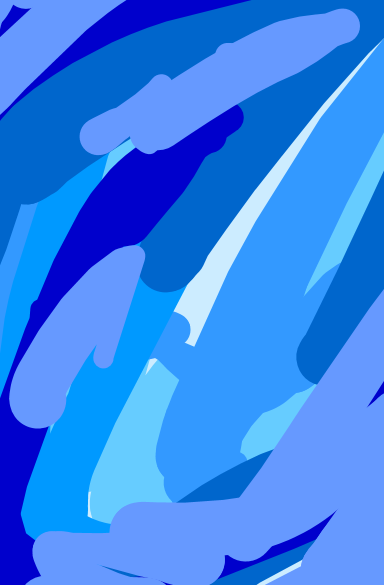
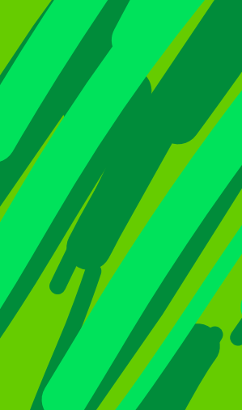
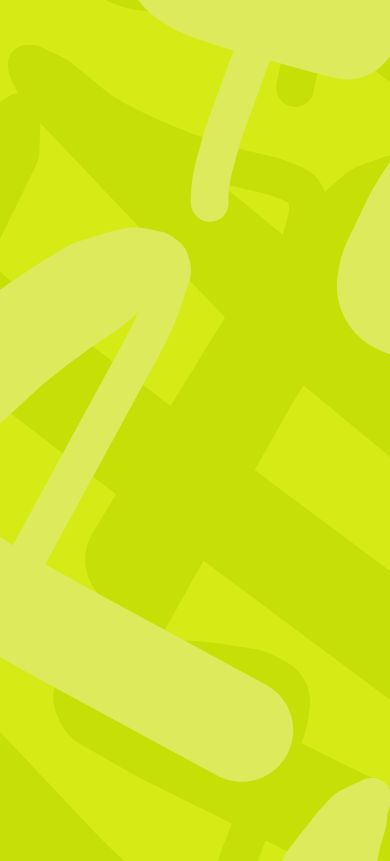
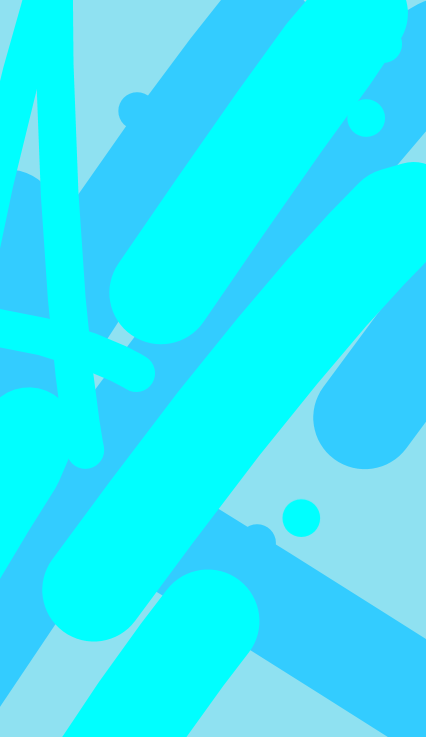
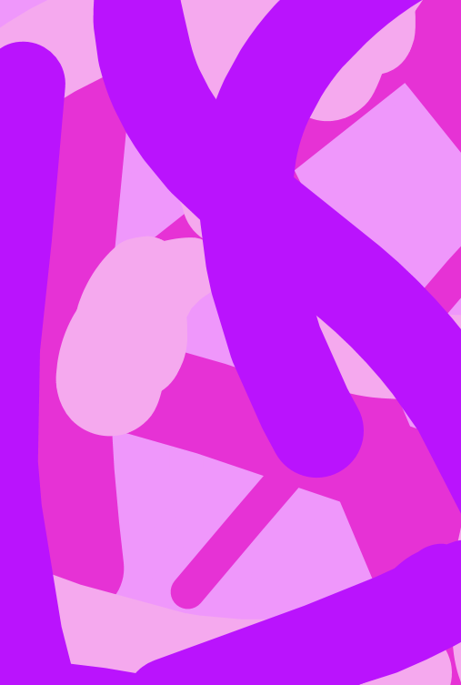
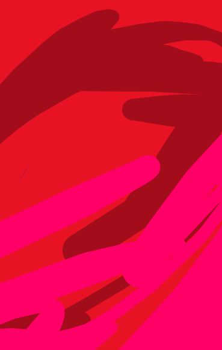

Depth and motion in a layered composition where saturated blues dissolve into softer, atmospheric tones. The piece evokes the sensation of looking through water or memory—fluid, shifting, and unresolved. — STUDY IN BLUE, acrylic on canvas, 2023

Angular gestures and overlapping strokes create a rhythmic field of greens, oscillating between organic growth and constructed movement. The composition suggests direction without destination, like paths cutting through a dense landscape. — STUDY IN GREEN, acrylic on canvas, 2023

Study in the art of luminosity and restraint, this work explores the tension between form and light. Subtle variations in yellow create a quiet, almost vibrating surface that rewards prolonged observation. — STUDY IN YELLOW, acrylic on canvas, 2023

Cool, translucent tones intersect in a composition that feels both structured and fluid. Lines dissolve into planes, suggesting architectural fragments suspended in water. — STUDY IN AQUA, acrylic on canvas, 2023

Dense layers of violet and indigo create a sense of depth and introspection. The composition leans inward, inviting the viewer into a more intimate, contemplative space. — STUDY IN PURPLE, acrylic on canvas, 2023

Bold, dynamic strokes dominate the surface, driven by contrast and intensity. The composition captures a moment of tension—raw, immediate, and deliberately unresolved. — STUDY IN RED, acrylic on canvas, 2023